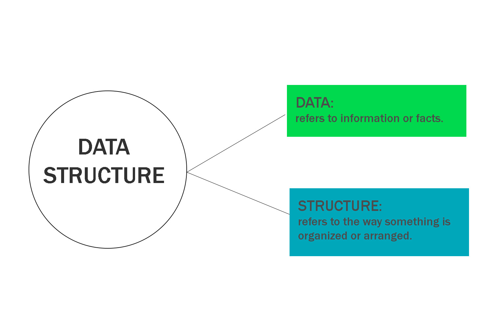
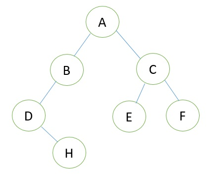

Chapter 1 : Introduction To Data Structure
What is Data Structure?
- A technique of organizing and storing of different types of data items in computer memory.

- It maintains the logical relationship existing between individual data elements.
- Examples of data structure are arrays, linked list, stack, queue, etc.
- Data structure is widely used in every aspects of computer science i.e. OS, complier design, AI,
Graphics and more.
- it helps to enhance the performance of a software.
- It mainly specifies four things:
- Organization of data
- Accessing nethods
- Degree of associativity
- Processing alternatives for information
Why data structure is needed?
- As per the application is getting complex and data is increasing day by day, Data structure is needed to
handle:
- Processor speed
- Data search
- multiple response
Classification of data structure:
The data structure is classified into two types:
- Primitive data structure
- non-primitive data structure

1) Primitive Data Structure
- - Basic data structure
- - Directly operated upon machine instruction.
- - Example: int, float, double, etc in case of C programming are known as primititve data types
- - Used to store small data.
- - int a = 5; // a stores 5
2) Non-Primitive Data Structure
- - Highly developed complex data structure, develop from primititve data structure.
- - Responsible for organizing the groups pf homogeneus and heterogeneus data elements.
- - Responsible for organizing the group of homogeneous and heterogeneus data elements.
here, Homogeneous data element means the same type, Heterogeneous means disverse type.
Array are homogeneous, since you declare the single type as part of the defination. class tends to be heterogeneus you have integers, strings, and other classes, etc.
- Types of non-primitive data structure:
- Linear Data Structure
- Non-linear Data Structure
i) Sequential Representation
- In this Organization, the elements or components of the system are arranged in a specific order and each element depends on the previous one.
- Advantage: faster access to elements (less time to retrive the data)
- Can be used for implementing data structure like array.
- This organization is best for data structure that need to be accessed frequently and are relatively static (fixed, same,doesn't change)
;
Sequential Representation of binary tree:
- Using one dimensational array
- Array, eg. Tree[] stores element of tree.
- An empty tree or sub-tree is specified using null
- Array is used to implement heap